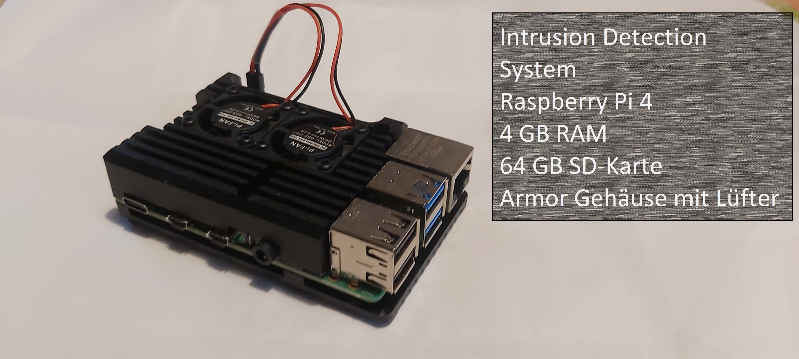
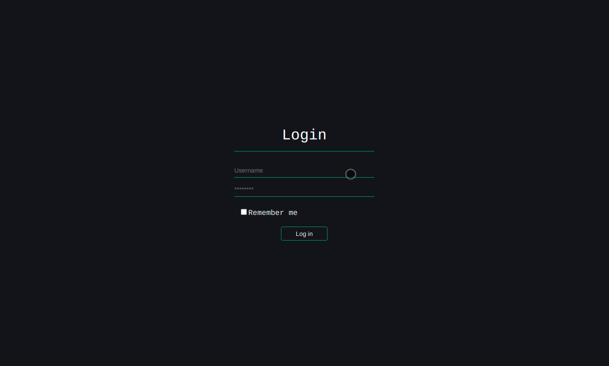
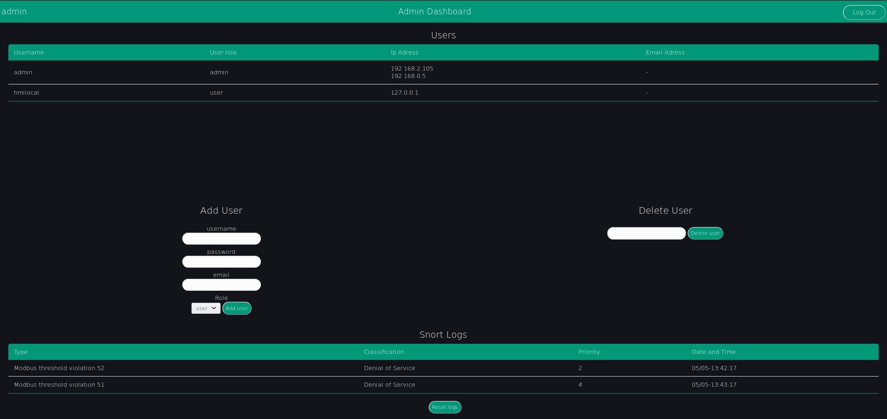

LICSTER¶
Team¶
Inhalt:
1. Einleitung¶
Industriekontrollsysteme sind heutzutage sehr weit verbreitet und elementar wichtig für die Wirtschaft sowie die Infrastruktur. Durch die Digitalisierung werden diese immer enger mit einander verbunden um einen Fernzugriff bzw. eine Überwachung zu ermöglichen. Da es jedoch mehr Schwachstellen gibt, wächst das Risiko eines Angriffes stark. Ziel dieses Projektes ist es ein günstiges Testbed zu schaffen, um die Sicherheit von Industriekontrollsystemen zu erhöhen.
Am Afang des Projektes haben wir eine klare Gruppeneinteilung zu den jeweiligen Unterprojekten (IDS, SecCom und Web-Applikation) gemacht. Dies hatte zur Folge dass auch unter den Gruppen viel kommuniziert werden musste.
2. Workflow¶
Jedes Projekt sollte damit es erfolgreich wird einen einheitlichen Workflow besitzen. Dieser dient zur Planung, Nutzung der Ressourcen und damit das Ziel vom Projekt nicht verfehlt wird. Zur Kommunikation im Team nützten wir verschiedene Technologien und Vorgehensweisen, um eine möglichst gute kooperative Arbeitsweise zu ermöglichen. Diese Strategien werden im Folgenden genauer erklärt.
2.1. Jitsi¶
Um die Kommunikation mit dem Professor herzustellen wurde das Tool jitsi benützt. Der Vorteil dabei liegt darin das man sich keinen Account erstellen muss. Somit wurde es ermöglicht das jeder leicht an den Meetings teilnehmen konnte. Das Meeting mit dem Professor war standartmäßig immer am Donnerstag um 17:30.
2.2. Discord¶
Zur Besprechung und falls es Themen gibt, die mit dem Team besprochen werden mussten wurde Discord benützt. Dabei wurden mehrere Text Kanäle und sprach Kanäle erstellt, die man benutzten, kann. Bei den Text Kanälen wurde drauf geachtet das jeder punkt einen eigenen Kanal hat. Dies haben wir getan damit eine gute Übersicht gewährleistet wird und man somit auch bei einem späteren Zeitpunkt die Informationen leicht nachschauen kann die man braucht.

2.3. Jira¶
Für die zentrale Verwaltung der aufgaben wurde das Tool jira benützt. Dabei wurde mit dem Scrum Prinzip gearbeitet. In Scrum arbeitet man mit sogenannten Sprints. Diese bestimmen einen Zeitraum, bei uns 1-2 Wochen, in der bestimmte Aufgaben erledigt werden müssen. Die Arbeitsweise funktionierte so dass man sich am Anfang einer jeden Woche drauf geeinigt hat welche aufgaben erledigt werden müssen diese wurden dann den jeweiligen Personen zugewiesen. Ideen oder aufgaben die für diese Woche noch nicht zu bearbeiten sind oder noch nicht möglich sind zu bearbeiten wurden ins Backlog gesetzt. Die aufgaben könne dabei drei zustände einnehmen: Aufgabe, wird ausgeführt und fertig.

3. Intrusion Detection System¶
In unserer heutigen Zeit nehmen Angriffe auf industriele Systeme stetig weiter zu. Immer wieder werden neue arten gefunden wie ein System angegriffen werden kann. Dementsprechend gibt es auch schon sehr viele verschieden Tools die dafür da sind um zu erkennenden wenn ein Angriff oder ein exploit auf einem System ausgeführt wird und diesen dann auch dementsprechend zu stoppen: Software wie Firewalls verhindern dass nicht autorisierter Datenverkehr in das Netzwerk gelangt, Spam-Filter um unerwünschte E-Mail-Nachrichten zu verhindern und Antiware-Tools zum Schutz von Endpunkten vor Malware. All diese Tools werden in so gut wie jedem Unternehmen eingesetzt egal welche Branche oder wie groß es ist. Ein weiteres wertvolles Sicherheitstool was ebenfalls eingesetzt wird ist ein Netzwerk-IDS (Intrusion Detection-System). Um dieses geht es auch in unserem Teil Projekt, bei dem wir ein solches System in dem Testbed Licster implementiert haben.
3.1. Unser Team¶
Unser Team für das Teilprojekt „Intrusion Detection System“ (IDS) besteht aus drei Leuten, die auch schon in ihrem Studium einen starken Fokus auf IT-Sicherheit gelegt haben. Wir haben zusammen mehrerer Kurse in Richtung IT-Sicherheit besucht und teilen uns die Faszination Systeme sicherer machen zu wollen. Deswegen wurde schnell klar, dass unser Team einen großen Wert auf den Sicherheitsaspekt von LICSTER legen wird. Die Sicherheitslage von Industriesystemen auf der ganzen Welt wird immer kritischer. Bei Angriffen auf diese Systeme können in kürzester Zeit große wirtschaftliche Schäden erzielt werden.
Deswegen haben wir uns zur Aufgabe gemacht, LICSTER eine weitere Sicherheitsschicht hinzuzufügen. Schnell wurde klar, dass ein IDS eine schnelle und aufwandseffiziente Lösung für unsere Problemstellung ist. Ein IDS kann in ein bestehendes System eingebaut werden, ohne dass direkte Änderungen am System gemacht werden müssen. Dies war uns besonders wichtig, da LICSTER bereits vor unserem Projekt schon fertiggestellt war und wir keine konzeptuelle Änderung mehr nachträglich realisieren wollten. Ein bestehendes IDS zu Nutzen hat es uns ermöglicht den zeitlichen Rahmen des Projekts einzuhalten und nützliche Fähigkeiten für unser weiteres Studium zu erlernen.
3.2. Einrichtung Pi¶
Für die Realisierung des IDS wurde sich für ein Raspberry Pi 4 entschieden. Mit 4 GB RAM in der ausgewälten Konfiguration ist das Pi geeignet Snort als IDS laufen zu lassen. Als Betriebssystem wird das Raspberry Pi OS (früher Raspbian genannt) genutzt, welches von der offiziellen Seite bezogen wurde (https://www.raspberrypi.org/downloads/). Dies wurde mit einem Image-Tool auf eine SD-Karte gespielt und über SSH wurden dann die restlichen Einrichtungen vorgenommen. Nachdem alles eingerichtet war, konnte das Pi in das LICSTER Netzwerk eingesetzt werden. Das Pi wurde an den Mirrorport des Switchs angeschlossen, damit der gesamte Traffic des LICSTERs am Pi empfangen werden kann. Um durch den Dauerbetrieb entstehende Abwärme entgegenzuwirken wurde eine Hülle mit Lüftern für das Pi angeschafft. Im Home-Verzeichnis wurde das Git aus GitLab gecloned. Dieses Repository enthält die Configs und Rules für Snort, sowie weitere Skripte für das IDS.
3.3. Einrichtung VM¶
Aus Kostengründen konnte nicht für jedes der drei Mitglieder ein Raspberry Pi gekauft werden. Dieses Problem wurde mit Virtuellen Maschinen gelöst. Virtuelle Maschinen emulieren bestimmte Hardware als Software auf einem Hostsystem. Als Virtualisierungssoftware wurde VirtualBox verwendet welches ein Image des Raspberry Pi Desktops nutzte. Somit konnte jedes Mitglied seine eigenes Raspberry Pi simulieren und jede Aufgabe konnte von Jedem erledigt werden. Bei der Einrichtung des Betriebssystems musste auf die bautechnischen Beschränkungen des Raspberry Pi 4 geachtet werden. Somit musste in der VM der Hauptspeicher auf 4 GB RAM beschränkt und der Festplattenspeicher musste auf die 64 GB der eingebauten SD-Karte begrenzt werden.
3.4. Was ist ein IDS¶
Doch was genau ist nun ein Intrusion Detection system. Eine gute Definition für ein ids lauten folgend. „Ein IDS (Intrusion Detection System) ist ein Gerät oder eine Anwendung, mit der der gesamte Netzwerkverkehr überprüft und der Benutzer oder Administrator benachrichtigt wird, wenn nicht autorisierte Versuche oder Zugriffe stattgefunden haben.“ Im Gegensatz zu einer Firewall welche meist eher als Gatekeeper fungiert also nur den Netzwerkverkehr überwacht und bestimmt ob er ins Netzwerk darf. Konzentriert sich Ids System auf den traffic, der im internen Netzwerk abläuft. Dabei wird anhand von verschieden rule sets geschaut ob ein traffic verdächtig ist bzw. er sich ungewöhnlich verhält bspw. Modbus mehr traffic in der Sekunde als eigentlich der Standard für das System ist. Durch diese Weise kann ein ids Angriffe erkennen welche an der Firewall vorbei kommen oder aus dem eigenem Netzwerk stammen.
3.5. Wieso man es braucht¶
Keine Firewall ist Fehler frei und kein Netzwerk ist undurchdringlich. Angreifer entwickeln ständig neue Exploits und Angriffstechniken, um auf ein System zu kommen. Was von fielen Angreifern zusätzlich gerne genutzt wird ist Social Engineering oder andere arten von Malware. Über diese Methoden gelangen sie meist an Benutzeranmeldeinformationen und dadurch haben sie nun einen berechtigten zugriff auf das Netzwerk ohne das die Firewall dies als böswilligen angriff sieht. Ein Network Intrusion Detection System kann dagegen immer noch sehe was die Person auf dem System macht und falls dabei nun versucht wird das irgendwelche angriffe ausgeführt werden diese auch erkennen und den System Administrator zu benachrichtigen das dort was im System nicht stimmt.
Der Haupt Zweck eines ids systems besteht somit darin das It-Personal zu benachrichtigen falls es einen Angriff oder andere Arten von Bad traffic gefunden hat. Die Kunst für das Personal besteht nun darin zu schauen welche nachrichtig stimmen und welche ein false positiv sind.
3.6. Arten von IDS¶
Im Grundlegen werden zwischen zwei Arten von ids Systemen unterschieden nämlich der signature-based detection und der anomaly-based detection.
3.6.1. Signature-based detection¶
Bei dieser Methode werden feste Muster verwendet, um den traffic zu kontrollieren. Diese Muster beschreiben verdächtige Sammlung von Abfolgen von Aktivitäten oder Operationen, die möglicherweise schädlich sein können. Diese werden dann meist in einer Datenbank gespeichert. Es werden somit genau definierte Angriffsmuster verwendet, die die Schwachstelen im System ausnutzten. Die Zeit, die somit gebraucht wird, um den traffic zu vergleichen ist minimal. Der Hauptvorteil besteht somit darin das Muster oder Signaturen das Netzwerkverhalten leicht verstehen zu können. Es ist somit effizienter Angriffe zu verarbeiten die schon bekannt sind.
Die Hauptbeschränkung dieses Systems ist dadurch das Reagieren und Erkennen von Angriffen, die nicht in der Datenbank gespeichert sind. Somit kann dieses System leicht getäuscht werden das es nur mit einem bestimmten Satz von ausdrücken oder mit Zeichenfolgenübereinstimmung arbeiten. Desweitern tuen sich solches System sehr schwer mit Angriffen bei denen Menschen aktiv etwas tun.
3.6.2. Anomaly-based detection¶
Bei diesem System ist das Netzwerkverhalten der Haupt Parameter. Deshalb wird vorerst ein Model erstellt, welches zeigt wie der normale traffic im Netzwerk aussehen soll. Dieser kann entweder vorbestimmt werden oder durch vom Netzwerkadministrator festgelegte Spezifikationen oder Bedingungen mit machine learning gelernt werden. Wenn das Netzwerkverhalten innerhalb des Models liegt passt alles falls nicht wir eine Wahrung vom Anomaly detection system ausgelöst.
Das Definieren der Regelsätze ist einer der Hauptnachteile des Anomaly detection systems. Die Effizienz des Systems hängt von der effektiven Implementierung und dem Testen von Regelsätzen für alle Protokolle ab. Darüber hinaus wirken sich verschiedene Protokolle verschieden stark auf das System aus. Des Weiteren hat das System Probleme dabei wen das böswillige Verhalten unter das akzeptierende Verhalten fällt.
3.7. Wireshark¶
Um einen Überblick über die Pakete, die im LICSTER Netzwerk unterwegs sind, zu bekommen, haben wir, mit Wireshark, den Netzwerkverkehr aufgezeichnet.
Als erstes haben wir pcaps während dem Einschalten, Betrieb und Abschalten von dem Testbed, mithilfe des Mirror Ports erstellt, um zu sehen was während einem Regulären betrieb auf dem Netzwerk passiert.

Als nächstes haben wir pcaps von Angriffen, die wir Durchgeführt haben, aufgezeichnet, um Regeln für unser Intrusion-Detection-System entwickeln zu können.

3.7.1. Durchgeführte Angriffe¶
Die Skripte für die Angriffe sind im Offiziellen Github Repository zu finden (https://github.com/hsainnos/LICSTER/tree/master/attacks).
3.7.1.1. Flooding¶
Flooding ist eine einfache und beliebte Art eines Denial-of-Service Angriffs. Für den Angriff haben wir hping3 benutzt. Ein Einfaches CLI-tool um Pakete zu versenden.
Hier wird eins der beiden RemoteIO’s vom LICSTER Testbed geflutet.
$ sudo hping3 --flood 192.168.0.51
3.7.1.2. Angriff auf das Fließband¶
Hier haben wir mit einem kleinen Python-Skript das Fließband vom LICSTER Testbed angegriffen und zum stoppen gebracht. Ausgeführt wird er mit:
$ sudo ./conveyer_belt.py
3.7.1.3. Angriff auf die manuelle Kontrolle¶
Hier wird, mit einem Python-Skript, die manuelle Kontrolle vom LICSTER Testbed übernommen. Ausgeführt wird er mit:
$ python3 -i client.py
>>>
Anschließend kann man dann Befehle senden um das Testbed zu steuern.
3.8. Snort¶
3.8.1. Wieso Snort?¶
Es wurde sich für Snort entschieden, da es schon seit längerem auf dem Markt verfügbar ist. Dank dieser Zeit ist Snort sehr ausgereift und auch weit verbreitet. Es ist kostenlos und durch seine große Community ist es leicht bei Problemen Unterstützung zu bekommen. Ein weiterer Punkt, warum sich für Snort entschieden wurde, ist, dass bereits einige Gruppenmitglieder sich ein wenig mit den Regeln auskannten. Die Syntax der Regeln ist leicht zu verstehen, bieten aber dennoch die nötige Komplexität, um aussagekräftige Meldungen zu bekommen.
3.8.2. Snort Einrichtung¶
Als Erstes hat jedes Gruppenmitglied Snort bei seiner eigenen VM eingerichtet. So konnten schon die ersten Erfahrungen mit den Regeln und der Funktion von Snort gesammelt werden. Dann wurde abgewogen, welche Snort Version am geeignetsten für das Vorhaben ist. Zur Auswahl standen v2 und v3. Die neuere Version v3 besitzt neue Funktionen, aber dies kommt auch mit Performanceeinbußen einher. Da das Raspberry Pi 4 nur begrenzte Rechenleistung und Hauptspeicher besitzt, wurde sich für die ausgereiftere v2 entschieden. Snort wurde über apt install snort bezogen und war dann auch bereit für den Einsatz. Um die gleichen Konfigurationen und Regeln zu haben, wurde ein GitLab Repository eingerichtet welches alle Konfigurationsdateien und Regeln beinhaltet. Somit musste, um Snort zu starten, nur noch der Pfad zu der Konfiguration angegeben werden. Diese Konfigurationsdatei beinhaltete wiederrum die relativen Pfade zu den Regeln im Repository. Nach der Einrichtung sieht der Befehl zum Starten von Snort so aus: sudo snort -c /path/to/snort.conf
3.8.3. Snort Regeln¶
Damit Snort Angriffe/Abnormalitäten erkennen kann, müssen Regeln vorhanden sein, wonach Snort sich richten kann. Darauf Achten sollte man, dass man nicht zu viele Regeln implementiert, denn so kann es passieren, das Snort zu viele Alarme wirft, von denen viele falsch sind und der echte Alarm untergeht (Man sieht den Angriff vor lauter „Angriffe“ nicht mehr). Hat man aber zu wenige Regel implementiert, kann es passieren, dass mögliche Angriffe nicht erkannt werden. Es müssen also so wenig Regeln wie möglich, aber so viele wie nötig implementiert werden um Fehlalarme zu vermeiden und dennoch echte Angriffe erkennen zu können.
3.8.3.1. Regel schreiben¶
Damit man Regeln schreiben kann muss man erst verstehen wie eine Regel aufgebaut ist. Hier Hilft die offizielle Anleitung (http://manual-snort-org.s3-website-us-east-1.amazonaws.com/node27.html).
Hier in Kurzfassung:
Eine Regel besteht aus drei Teilen:
Aktion
Kopf
Regeloptionen
3.8.3.2. Aktion¶
Hier wird angegeben was Snort tun soll, wenn es ein Paket findet, das den Regel Kriterien entspricht. Es gibt 3 verfügbare Standardaktionen in Snort, alert, log und pass. Wenn Snort im inline-modus ausgeführt wird, stehen drop, reject und sdrop zur verfügung.
'alert'erzeugt einen Alarm mit der gewählten Alarm Methode und protokolliert dann das Paket'log'das Paket protokollieren'pass'das Paket ignorieren'drop'das Paket blockieren und protokollieren'reject'das Paket blockieren, protokollieren und senden eines TCP-Reset, wenn das Protokoll TCP ist, oder eine ICMP-Port-Unerreichbarkeit Meldung, wenn das Protokoll UDP ist.'sdrop'das Paket blockieren, aber nicht protokollieren
3.8.3.3. Kopf¶
Dieses Feld steht für das Protokoll, die IP Adresse, die Ports und die Richtungsanweisung.
Protokolle
Es gibt vier Protokolle, die Snort auf verdächtiges Verhalten analysiert: TCP, UDP, ICMP und IP.
IP Adressen und Ports
Der nächste Teil des Regelkopfes befasst sich mit der IP-Adresse und den Port für eine bestimmte Regel. Man kann das Heimnetzwerk in der Konfigurationsdatei von Snort festlegen. Das Schlüsselwort any kann zur Definition einer beliebigen Adresse verwendet werden.
3.8.3.4. Regeloptionen¶
Alle Regeloptionen werden durch das Semikolon (;) voneinander getrennt. Es gibt vier Kategorien von Regeloptionen:
- general
enthält extra Informationen über die Regel, haben aber keine auswirkung während der Erkennung
- payload
diese Optionen schauen in den Packet-Payload rein
- non-payload
diese Optionen schauen für nicht payload Daten
- post-detection
diese Optionen sind Regelspezifische trigger, die ausgeführt werden, nachdem eine Regel ausgelöst wird
Für genauere Regeloptionen schaut man hier am besten nach: http://manual-snort-org.s3-website-us-east-1.amazonaws.com/node32.html
3.9. Unsere Snort Regeln¶
3.9.1. HTTP Regeln¶
alert tcp !$HOME_NET any -> 192.168.0.10 $HTTP_PORTS (msg:"HTTP Get from EXTERNAL to 192.168.0.10"; \
classtype: bad-unknown; content: "HTTP"; sid 1002000; rev: 1;)
Diese Regel ist dafür da, falls von einem Außenstehenden Netzwerk ein HTTP GET request empfangen worden ist.
alert tcp !192.168.20 any -> 192.168.30 $HTTP_PORTS (msg:"HTTP Get not from 192.168.0.20 to 192.168.0.30"; \
classtype: bad-unknown; content: "HTTP"; sid 1002005; rev: 1;)
Hier ähnlich wie bei der vorherigen Regel, nur wird hier der Alarm geworfen, falls das GET request vom Heimnetz, aber nicht vom HMI, kommt.
3.9.2. ICMP Regel¶
Portscan
alert icmp any any -> 192.168.0.10 any (msg:"Ping nmap Portscan 192.168.0.10"; \
dsize:0; itype:8; classtype: network-scan; sid:1003000; rev:1;)
ICMP-Fehlermeldungen (Protocol/Port Unreachable) können verwendet werden, um die offenen Ports zu einer IP-Adresse herauszufinden.
Da die Paketgröße 0 ist wird hier 'dsize' auf 0 gesetzt und der 'itype' auf 8, da der Typ 8 für Echo Request steht.
DoS
alert icmp any any -> 192.168.0.10 any (msg:"Ping flood detected 192.168.0.10"; \
itype:8; count 20, seconds 1; classtype: denial-of-service; sid:1003010; rev:1;)
Standard DoS Ping flood.
DoS Teardrop
alert icmp any any -> 192.168.0.10 any (msg:"ICMP Teardrop attack 192.168.0.10"; \
fragbits:M; classtype: denial-of-service; sid:1003020;rev:1;)
Teardrop-Angriffe senden Fragmentierte Pakete die nicht wieder zusammengesetzt werden können, das zu einem DoS führen kann. Um den Angriff zu erkennen,
wird hier 'fragbits' auf 'M' für more gesetzt, was heißt dass noch mehr Pakete kommen.
ICMP Router Discovery
alert icmp any any -> 192.168.0.10 any (msg:"ICMP Router Discovery 192.168.0.10"; \
icode:0; itype:9; classtype: network-scan; sid:1003030; rev:1;)
Ähnlich wie beim Portscan, nur werden hier nach Benachbarten Routern gesucht. 'itype' wird auf 9 gesetzt da es für Router Advertisement steht.
ICMP Too large packet
alert icmp any any -> 192.168.0.10 any (msg:"Large ICMP Packet 192.168.0.10"; \
dsize:>1500; classtype: denial-of-service; sid:1003040; rev:1;)
Diese Regel ist dafür da, falls zu große ICMP Pakete gesendet werden. 'dsize' ist für die Paketgröße und wurde hier auf größer 1500 gesetzt.
3.9.3. Modbus Regel¶
DoS
alert tcp any any -> 192.168.0.51 502 (msg:"Modbus threshold violation 51"; threshold: \
type both, track by_dst, count 60, seconds 1; classtype: successful-dos; sid:1001004;)
Diese Regel erkennt einen Denial-of-Service Angriff über das Modbus.
3.9.4. SSH Regel¶
Strange Traffic
alert tcp !$HOME_NET any -> 192.168.0.10 22 (msg:"SSH Request from EXTERNAL NET to 192.168.0.10"; \
content:"SSH"; nocase; offset:0; depth:4; classtype: attempted-user; sid:1000101; rev:1;)
Diese Regel erkennt einen SSH Zugriffs versuch aus einem externen Netz.
Brute Force
alert tcp any any -> any 22 (msg:"SSH Brute Force Attempt"; flow:established, to_server; content:"SSH"; \
nocase; offset:0; depth:4; detection_filter:track by_src, count 30, seconds 1; classtype: attempted-user; sid:1000201; rev:1;)
Diese Regel erkennt einen SSH Brute Force angriff.
DoS
alert tcp any any -> 192.168.0.10 22 (msg:"SSH DOS against 192.168.0.10"; \
detection_filter:track by_src, count 50, seconds 1; classtype: denial-of-service; sid:1000301; rev:1;)
Diese Regeln erkennt einen SSH Denial-of-Service angriff.
alert tcp any any -> 192.168.0.10 22 (msg:"SSH DDOS against 192.168.0.10"; \
detection_filter:track by_dst, count 500, seconds 1; classtype: denial-of-service; sid:1000306; rev:1;)
Gleich wie oben, nur ist diese Regel für das Erkennen eines Distributed-Denial-of-Service Angriffs zuständig.
4. Secure Communication¶
4.1. Einleitung¶
Als die Secure Communication Gruppe haben wir uns ausschließlich mit der internen Kommunikation des LICSTERs auseinandergesetzt. Als Ziel haben wir es uns gesetzt das bereits implementierte Modbus-Protokoll, das in dieser Form sich als sehr unsicher bewiesen hat, zu verschlüsseln. Dabei haben wir uns dazu entschieden, das TLS-Protokoll einzusetzen. Dieses bietet zusätzlich zu der Verschlüsselung der Anwendungsschicht ein Handshake-Protokoll, das die Authentifizierung der Kommunikationspartner ermöglicht.
Veranschaulichung der ursprünglichen Kommunikation:
{kind=link}
Dies wurde realisiert, indem wir eine zusätzliche Softwareschnittstelle (Secure Layer) im PLC implementiert haben. Diese ermöglicht eine beidseitig verschlüsselte Kommunikation zwischen dem PLC und den Remote-IOs, indem sie eingehende Pakete von den Remote-IOs entschlüsselt und von dem PLC ausgehende Pakete verschlüsselt. Die interne Kommunikation im PLC zwischen dem Secure-Layer und dem OpenPLC findet unverschlüsselt statt.
Veranschaulichung mit Secure Layer:
{kind=link}
4.2. Secure Layer¶
Der Secure Layer (sichere Schicht) ist die Komponente die zwischen den Remote-IOs und OpenPLC sitz.
Detaillierte Veranschaulichung:
{kind=link}
Der Secure Layer ist in Python3.6 geschrieben und in 2 Hauptkomponenten zu unterteilen:
4.2.1. Bridge¶
Die Bridge (Brücke) besteht aus zwei TCP Verbindungen, eine TLS Verbindung zu einem Remote TCP Server, und einen lokalen TCP Server der auf eine lokale Verbindung wartet.
Um dies zu ermöglichen muss die Bridge ein wenig Modbus verstehen, da das Message-Framing in diesem Fall durch Informationen im Header vom Modbus Protokoll vorhanden ist.
4.2.2. Bridgemanager¶
Der Bridgemanager (Brückenverwalter) verwaltet die einzelnen Brücken und startet diese bei Fehlern neu.
4.3. Remote-IO¶
4.3.1. Mbed TLS¶
Um TLS auf den Remote-IOs zu implementieren haben wurde die Mbed TLS Bibliothek gewählt, da diese kompakt, portabel und einfach verständlich ist. Hierbei handelt es sich um ein Open-Source Projekt, welches auf GitHub (https://github.com/ARMmbed/mbedtls) zu finden ist. Ein weiterer Grund der für Mbed TLS gesprochen hat ist die Tatsache, dass es innerhalb STM32CubeMX konfiguriert werden kann, und dadurch viel Zeit beim konfigurieren der Bibliothek gespart werden kann.
4.3.2. Heap Speicher¶
FreeRTOS verwaltet den gesamten Heap Speicher, darum schlagen Aufrufe der Standardbibliotheksfunktionen für dynamische Speicherverwaltung fehl. Das heißt jeder Aufruf an calloc oder malloc geben NULL zurück. Jedoch benötigt Mbed TLS dynamischen Speicher. Explizit benötigt Mbed TLS calloc und free. Alternativ kann Mbed TLS auch mit einem statischen Block an Speicher arbeiten, jedoch wurde den dynamischen Ansatz gewählt.
Diese Implementation ist in heap_mem.h deklariert und in heap_mem.c definiert.
heap_mem.c beinhaltet Folgenden Quellcode:
#include "heap_mem.h"
#include "cmsis_os.h"
extern SemaphoreHandle_t alloc_mutex;
void* rmalloc(size_t size)
{
void* ptr = NULL;
if(size > 0)
{
while (xSemaphoreTake(alloc_mutex, 10) != pdTRUE);
ptr = pvPortMalloc(size);
xSemaphoreGive(alloc_mutex);
}
return ptr;
}
void* rcalloc(size_t num, size_t size)
{
size_t total = num * size;
void* ptr = NULL;
if(total > 0)
{
while (xSemaphoreTake(alloc_mutex, 10) != pdTRUE);
ptr = pvPortMalloc(total);
xSemaphoreGive(alloc_mutex);
for(size_t i = 0; i < total; i++)
((uint8_t *) ptr)[i] = 0;
}
return ptr;
}
void rfree(void* ptr)
{
if(ptr)
{
while (xSemaphoreTake(alloc_mutex, 10) != pdTRUE);
vPortFree(ptr);
xSemaphoreGive(alloc_mutex);
}
}
Um diese problemlose Nebenläufigkeit in unserer eigenen Implementierung zu gewährleisten werden alle kritischen Vorgänge mit einem Mutex, bzw. Semaphore abgesichert. Der Code der das gewährleistet ist Folgender:
/*
* Warte bis die Lock von dem Mutext genommen werden kann,
* d.h. bis es sicher ist das kein (anderer) Thread
* die Lock vom Mutex besitzt.
*/
while (xSemaphoreTake(net_mutex, 10) != pdTRUE);
/*
* Gebe die Lock von dem Mutext ab,
* sodass sie von einem (anderen) genommen werden kann.
*/
xSemaphoreGive(net_mutex);
Mbed TLS stellt die folgende Funktion bereit um eigene Implementationen der calloc und free Funktionen innerhalb Mbed TLS zu verwenden:
int mbedtls_platform_set_calloc_free( void * (*calloc_func)( size_t, size_t ),
void (*free_func)( void * ) );
Jedoch gilt zu beachten, dass diese Funktion nur aufgerufen werden kann wenn MBEDTLS_PLATFORM_C und MBEDTLS_PLATFORM_MEMORY definiert sind! Diese wurden in unserem Fall über STM32CubeMX konfiguriert.
Diese Funktion wird in mbedtls.c aufgerufen:
#include "mbedtls.h"
#include "mbedtls/platform.h"
#include "heap_mem.h"
void MX_MBEDTLS_Init(void)
{
mbedtls_platform_set_calloc_free(rcalloc, rfree);
}
4.3.3. Network Stack¶
Um Mbed TLS in den aktuellen LWIP Network Stack einzubringen mussten einige Anpassungen gemacht werden.
LWIP verwendet für die Adressierung der Sockets einen Index.
Dieser Index wird standardmäßig in Mbed TLS nicht richtig adressiert, was dazu führt das alle mbedtls_net_context auf den gleichen Socket in LWIP verweisen. Diese Socketverwaltung musste somit selbst implementiert werden.
Dies wurde durch ein einfaches Array umgesetzt:
char socks[MEMP_NUM_NETCONN] = {0};
MEMP_NUM_NETCONN beschreibt hierbei die Präprozessor für die maximale Anzahl an simultanen Netzwerkverbindungen.
Wenn ein Socketindex aktiv, bzw. reserviert ist wird dieser auf eine Wert der nicht 0 ist (in diesem Fall wird er auf 1 gesetzt).
net_sockets.c:
void mbedtls_net_init( mbedtls_net_context *ctx )
{
while (xSemaphoreTake(net_mutex, 10) != pdTRUE);
if(!lwip_initialized)
{
MX_LWIP_Init();
lwip_initialized = 1;
}
ctx->fd = -1;
for(int i = 0; i < MEMP_NUM_NETCONN; i++)
{
if(socks[i] == 0)
{
ctx->fd = i;
socks[i] = 1;
break;
}
}
xSemaphoreGive(net_mutex);
}
Beim freigeben eines mbedtls_net_context wird dessen Socketindex auch wieder auf 0 gesetzt, somit ist dieser wieder frei von einem anderen Socket benutzt zu werden.
void mbedtls_net_free( mbedtls_net_context *ctx )
{
if( ctx->fd == -1 )
return;
while (xSemaphoreTake(net_mutex, 10) != pdTRUE);
socks[ctx->fd] = 0;
xSemaphoreGive(net_mutex);
shutdown( ctx->fd, 2 );
close( ctx->fd );
ctx->fd = -1;
}
Sowohl beim initialisieren als auch beim freigeben wurde Nebenläufigkeit berücksichtig. Um diese problemlose Nebenläufigkeit in unserer eigenen Implementierung zu gewährleisten werden alle kritischen Vorgänge mit einem Mutex, bzw. Semaphore abgesichert. Der Code der das gewährleistet wird unter Heap Speicher erläutert.
4.3.4. Modbus¶
Um die TLS Implementierung optional zu halten wurde viel mit Präprozessoren gearbeitet. Wenn eine bestimmte Präprozessor definiert wird werden bestimmte Sektionen an Code ausgeführt, dadurch kann TLS einfach an- bzw. abgeschaltet werden. Zur Veranschaulichung wie das konkret in Code funktioniert dient folgendes Beispiel:
#ifdef USE_TLS
// Code in diesem Bereich wird nur ausgeführt wenn USE_TLS definiert ist.
#else
// Code in diesem Bereich wird nur ausgeführt wenn USE_TLS *nicht* definiert ist.
#endif
Konkret wird diese Präprozessor über die Makefile gesetzt, lediglich nur wenn make mit config=tls aufgerufen wird.
Generell hat sich strukturell nicht viel geändert zur ursprünglichen Modbus Implementation, es wurden lediglich LWIP Funktionen mit denen von Mbed TLS ersetzt, und wenn USE_TLS definiert ist wird zusätzlich der TLS Handshake durchgeführt.
4.4. Zertifikate¶
In ./tools/ wurde ein Bash Skript mit dem Namen create_new_certs_with_ca.sh erstellt.
Dieses Skript erstellt eine CA, sowie alle benötigten Zertifikate.
Zur Erstellung dieser Daten werden von Mbed TLS bereitgestellte Programme verwendet (gen_key und cert_write). Diese sind als Sourcecode auf GitHub zu finden:
https://github.com/ARMmbed/mbedtls/tree/development/programs
Im Anschluss werden die erstellten Zertifikate mit der CA signiert. Die CA (Certificate Authority) und ihre signierten Zertifikate werden in Ordnern des Secure Layers gespeichert. Daraufhin werden die für die Remote-IOs benötigten Schlüssel und Zertifikate in eine Makefile exportiert, wodurch beim Bauen der Remote-IO Binaries diese alle benötigten Informationen erhalten.
4.5. Fazit und Ausblick¶
4.5.1. Fazit¶
Durch die zusätzlichen Implementierungen kann nun optional zwischen der ursprünglich unverschlüsselten Modbus Verbindung und der durch das TLS-Protokoll verschlüsselten Verbindung ausgewählt werden. Zusätzlich zu der verschlüsselten Verbindung übernimmt das Protokoll auch die Überprüfung der Authentizität der Kommunikationspartner. So muss bei einem Verbindungsaufbau das Remote-IO mit einem Zertifikat belegen, dass dieser dem LICSTER-Netzwerk zugehörig ist.
4.5.2. Ausblick¶
Nach der durch die Verschlüsselung der Kommunikationswege zwischen dem PLC und der Remote-IOs errungenen Sicherheit kann an der Beschleunigung des TLS-Handshakes gearbeitet werden. Durch verwenden eines Secure Elements kann der momentan sehr langsame Verbindungsaufbau von etwa 10 Sekunden beschleunigt werden. Solch ein Microchip würde zusätzliche Sicherheit mit sich bringen, da die Privat Keys dieser unzugänglich sind. Nach der Verbesserung der Performance des Protokolls könnte die sichere Modbus Verbindung auch auf die weiteren Komponenten (HMI und SCADA) des Netzwerkes ausgeweitet werden. Um eine höhere Authentizität im LICSTER-Netzwerk zu erreichen könnte man die Client Authentifizierung derartig erweitern, dass zusätzlich zu den Remote-IOs auch das PLC mithilfe von Zertifikaten seine Zugehörigkeit bestätigen muss.
5. Webapplikation Backend¶
5.1. Einleitung¶
Unsere Aufgabe war es die Web-Applikation des LICSTER zu verbessern.
Konkret haben wir das Frontent für mehrere Geräte zugänglich gemacht und das Backend um eine Benutzerverwaltung erweitert. Des weiteren haben wir ein PIN-Feld für das HMI programmiert, die Datenbank der Benutzerverwaltung von der Kommandozeile aufsetzbar gemacht und die Logs des IDS zeigen wir nicht nur auf dem Admin Dashboard an, sondern benachrichtigen Admins auch über Breaches per Email. Ein WSGI (Web Server Gateway Interface) wurde implementiert, um die Einbindung eines Web Servers für Endbenutzer zu vereinfachen.
5.2. Anfangsstand¶
Die Flask Applikation der ersten LICSTER Gruppe war ein abgeschlossenes System, welches nur zur Benutzung auf dem HMI konzipiert war. Sie zeigt den Stand aller Servomotoren an, kann Orders anzeigen und plazieren und Motoren einzeln ansteuern.
Sie in einem Unternehmensnetzwerk laufen zu lassen wäre ein Sicherheitsrisiko gewesen, da jeder die Motoren bedienen konnte. Des weiteren würde es Anzeigeprobleme geben, da die Web Applikation nur für einen Bildschirm - den des HMI - programmiert wurde.
Im Folgenden präsentieren wir unsere Veränderungen und Erweiterungen.
5.3. Veränderungen¶
5.3.1. Modularer Aufbau¶
Die bestehende Webapp war eine Standart Flask App. Da wir sowohl eine Datenbank als auch Wege zum Administrieren und Einloggen hinzufügen wollten, haben wir uns dazu entschlossen der Flask App einen Modularen Aufbau zu geben. Dieser Aufbau wird es auch zukünftigen Gruppen erleichtern sich in die App einzuarbeiten und neue Funktionalitäten hinzuzufügen.
Flask - im Gegensatz zu anderen populären Frameworks wie z.B. Django hat keinen vorgegebenen Applikationsaufbau. Daher kann man wie folgt eine funktionsfähige Flask Web Applikation schreiben, die (sobald die app mit flask run gestartet wurde) unter localhost:5000/ „Hello World!“ anzeigt.
app.py
from flask import Flask
app = Flask(__name__)
@app.route("/")
def hello():
return "Hello World!"
if __name__ == "__main__":
app.run()
Mit jeder hinzugefügten Route wird dieses File allerdings unübersichtlicher, weswegen es sich anbietet die App in verschiede Files aufzugliedern. Wir haben uns dafür entschieden die Flask Applikation wie folgt aufzugliedern:
app/ # Alles was direkt mit dem Ablauf der App zu tun hat
app/__init__.py # Die Application Factory
app/admins.py # Alle Administrationsteile der Applikation
app/auths.py # Alle Authentifikationsteile der Applikation
app/db.py # Das Handling der Datenbankverbindung
app/forms.py # Das Handling aller Forms
app/views.py # Alle Routen zur Bedienung des LICSTER
app/templates/ # Alle HTML Templates der App
app/static/ # Die CSS, JavaScript, JQuery und Bootstrap Dateien der App
wsgi.py # Wird benötigt, um die App mit einem WSGI zu starten
admins.py, auths.py und views.py sind als Blueprints aufgebaut. Diese Blueprints werden in der main bzw create_app Funktion registriert. Danach funktionieren die Routen der einzelnen Files genauso wie die Routen eines app.py Files.
5.3.2. Application Factory¶
Eine Application Factory ist eine Funktion, die das globale App Object generiert und zurückgibt. Dies hat verschiedene Vorteile, z.B. ermöglicht es eine einfache Implementierung eines WSGI, das Testen mit verschiedenen globalen Konfigurationen und das einfache Hinzufügen von eigenen CLI Befehlen.
Zur Implementierung der Application Faktory haben wir den Startpunkt der App aus app.py in app/__init__ verlegt. Der Startpunkt ist nun die Funktion create_app(), welche als erstes eine Flask App kreiert, sie dann konfiguriert und als letztes alle Blueprints registriert, bevor sie die App zurückgibt.
5.3.3. Design¶
Für das Design haben wir uns zusammengesetzt und beschlossen dass ein schlichteres Design ohne viele visuelle Features besser ist. Es handelt sich nämlich um ein IT-Sicherheits-Projekt bei dem natürlich die Sicherheit des Systems an erster Stelle steht und es seriös wirken soll.

Für das PIN-Feld wurde eine JavaScript Klasse erstellt, welche für die Anzeige der Tasten und das Handling von Eingaben zuständig ist. Diese Anzeige ist nicht für mehrere Geräte angelegt sondern direkt auf das HMI angepasst.
Die normale Anmeldeseite wurde so realisiert, dass sie auf allen Geräten gut verwendet werden kann.
5.4. Erweiterungen¶
Als zwei Große Erweiterungen wurden das Benutzerverwaltungssytem und der Auswertung und Anzeige der IDS Logs zur Web Applikation hinzugefügt.
Im Benutzerverwaltungssytem gibt es drei Rollen, Admins, Users und nicht angemeldete Personen. Nicht angemeldete Personen haben die Möglichkeit die Startseite der Webapplikation zu besuchen. Andere Webseiten können sie allerdings nicht besuchen, da dies ein Sicherheitsrisiko wäre.
Angemeldete Benutzer können LICSTER wie zuvor auf dem Bildschirm des HMI nun über jedes Gerät, welches ihnen zur Verfügung steht bedienen.
Die dritte Rolle des Benutzverwaltungssystems erlaubt den Zugriff auf das Administratoren Dashboard, wo Benutzer hinzugefügt und gelöscht werden. Hier werden außerdem alle Nutzer tabellarisch angezeigt. Des Weiteren werden tabellarisch IDS Logs auf dem Dashboard angezeigt, falls der Benutzer dies aktiviert hat und bei Hinzufügen einer Email-Adressse zu einem Admin Account wird der Benutzer über Breaches direkt per Email benachrichtigt.
Das Styling der Admin Dashboard-Ansicht wurde mithilfe von HTML und CSS (Cascade Style Sheets) verwirklicht. Hierbei haben wir beschlossen das alle Funktionen auf einer einzigen Seite sind, damit es übersichtlich bleibt und die Bedienung schneller ist.
Zusätzlich gibt noch eine Reset-Funktion mit der man alle snort Einträge aus der Datenbank löschen kann.
5.4.1. Datenbank¶
Zur Speicherung der Benutzer, IP Adressen und IDS Logs haben wir eine SQLite Datenbank verwendet, da diese nicht viel Platz braucht und kein Datenbankverwaltungssystem braucht.
Um die Datenbank schnell aufsetzen zu können und das Passwort fürs HMI schnell verändern zu können wurden die Shortcuts flask init-db und flask change-hmi-password implementiert. Wir haben uns gegen Standart Benutzeraccounts und Passwörter entschieden, da diese ein Sicherheitsrisiko darstellen könnten und man die Datenbank normalerweise nur ein einziges Mal aufsetzen muss.
Das Passwort wird beim Erstellen eines Benutzers mit der generate_password_hash Methode von Werkzeug gehasht, der gehashte Wert wird dann gespeichert. Beim Login wird die check_password_hash Methode von Werkzeug verwendet. Wir haben uns gegen die Implementierung eines Salts entschieden, da es uns unsinnig erschien die Datenbank gegen Rainbow Table Attacks zu schützen.
5.4.2. Formen¶
Um CSRF-Attacken, insbesondere Session-Riding Attacken zu verhinden, bei denen Daten mithilfe einer gültigen Sitzung des Opfers manipuliert werden, haben wir für alle Formen FlaskForms verwendet. Dies ist eine im Paket WTForms enthaltene Klasse, welche resistent gegen CSRF-Attacken ist. Jede Subklasse von FlaskForms integriert Tokens in die HTML Formen und überprüft die in der zurückgeschickten Form enthaltenen Tokens mithilfe der validate_on_submit Methode automatisch.
5.4.3. Authentication¶
Für alle Routen, die zum An- und Abmelden von Benutzern gehören haben wir das auths Blueprint hinzugefügt.
Die Login-Route überprüft über die validate_on_submit Methode aller FlaskForms, ob eine valide Form gepostet wurde und falls dies nicht der Fall ist wird dem Benutzer eine Form geschickt. Basierend auf die IP Adresse wird dem Benutzer entweder HTML Seite des HMI oder die normale Login Seite geschickt.
Wenn die validate_on_submit Methode True zurückgibt, wird überprüft wer der Benutzer ist. Danach erfolgt ein Passwortabgleich. Falls dieser auch erfolgreich ist wird der Session eine Variable mit der Benutzerrolle hinzugefügt. Falls sich der Benutzer zum ersten Mal anmeldet, wird er nun weitergeleitet zum Passwort setzen. Andernfalls werden normale Benutzer (also auch HMI Benutzer) zur Startseite weitergeleitet und Administratoren zum Dashboard.
Die Route zum Paswswort überprüft genauso wie die Login Route über die validate_on_submit Methode, ob eine valide Form gepostet wurde und falls dies nicht der Fall ist wird dem Benutzer eine Form geschickt. Wenn der Benutzer ein Passwort eingibt, ersetzt der Hash dieses Passworts den bisherigen Hash in der Datenbank und das Feld für first_login wird auf False bzw. 0 gesetzt.
5.4.4. Administration¶
Für alle Routen, die zur Benutzeradministration gehören haben wir das admins Blueprint hinzugefügt.
Das Admin Dashboard gibt den Administratoren einen Überblick über alle vorhandenen User und alle vorhandenen Logs. Des weiteren gibt es einen Button zum Zurücksetzen der Snort Logs.
Auf dem Admin Dashboard gibt es drei Formen. Die erste Form ist zum Erstellen von Usern. Der Admin muss einen Benutzernamen, ein Passwort und eine Benutzerrolle vergeben. Falls die Benutzerrolle Admin ist, so kann er diesem Benutzer auch eine Email Adresse zuweisen. Zum Löschen eines Benutzers muss der Admin einfach den Benutzernamen in die zweite Form eingeben und auf Löschen klicken. Die letzte Form ist zum Löschen von den Snort Logs.
5.4.5. IDS Implementation¶
Zusammen mit dem IDS-Team haben wir an einer Lösung gearbeitet um den Administratoren Zugang zu den Logs zu geben. Dazu haben wir einen Log-Reader geschrieben, welcher die vom IDS übermittelten Logs auf Veränderungen überprüft und neue Daten in die Datenbank einträgt. Auf dem Admin-Dashboard werden diese in einer Tabelle angezeigt. Des Weiteren werden Admins - sofern sie sich mit einer Email-Adresse registriert haben - direkt über Sicherheitsverstöße informiert. Die IDS Implementierung ist eine optionale Funktion.
[**] [1:1001005:0] Modbus threshold violation 52 [**]
[Classification: Attempted Denial of Service] [Priority: 2]
05/05-13:42:01.732170 192.168.0.30:46084 -> 192.168.0.52:502
TCP TTL:64 TOS:0x10 ID:48012 IpLen:20 DgmLen:40 DF
***A**** Seq: 0x14371674 Ack: 0x3ED77 Win: 0x7210 TcpLen: 20
Ein Snort Log Eintrag hat den oben abgebildeten Aufbau. Um auf den Dashboard nur relevante Daten anzuzeigen, filtern wir den Typ, die Klassifikation, die Priorität und den Zeitpunkt aus den Log Einträgen.
db = get_db()
last_row = db.execute('SELECT * FROM snort WHERE id = (SELECT MAX(id) FROM snort)').fetchone()
if (last_row is None) or (last_row[1] != Type or last_row[2] != Classification or last_row[3] != Priority):
db.execute('INSERT INTO snort (snort_type, snort_classification, snort_priority, snort_datetime) VALUES (?,?,?,?)', (Type, Classification, Priority, Datetime))
db.commit()
Um Platz in der Datenbank zu sparen und die Email Accounts nicht mit gleichen Warnungen zu überfluten, haben wir uns dazu entschlossen nur neue Logs in der Datenbank zu speichern. Dazu überprüfen wir ob entweder die Datenbank Tabelle leer ist oder der Typ, die Klassifikation oder die Priorität des Logs sich verändert hat. Nur wenn einer der beiden Fälle eintritt, wird ein neuer Eintrag abgespeichert und eine Email versendet.
5.4.6. Warnungen per Mail¶
Wenn das Intrusion Detection System Verstöße entdeckt, wird eine Email an alle Administratoren mit einer eingetragenen Email verschickt. Dies wurde mithilfe des smtplib Pakets realisiert. Als Absender haben wir eine dafür dedizierte Email-Adresse verwendet. Diese sensiblen Daten sollten logischerweise nach dem Entwicklungsstadium durch Umgebungsvariablen ausgetauscht werden, da dies ansonsten ein Sicherheitsrisiko darstellen würde.
smtp.login('licster.breach@gmail.com', 'Lic#v77zX')
5.4.7. WSGI¶
Um die leichte Einbindung in einen Server wie nginx zu gewährtleisten, haben wir uns dazu entschlossen ein WSGI einzubinden. Wir haben Gunicorn ausgewählt und ein wsgi.py File erstellt, welches mit der create_app Funktion eine App kreiert und dann startet.
5.5. Fazit und Ausblick¶
5.5.1. Fazit¶
LICSTER zu verbessern war ein interessantes und forderndes Projekt. Wir mussten uns mit dem Framework Flask auseinandersetzen und in ein bestehendes Projekt einarbeiten. Es hat jedoch auch Spaß gemacht ein bestehendes Projekt durch eigene Funktionalitäten erweitern zu können. Wir haben die Web Applikation geräteübergreifend zugänglich gemacht und ein Benutzerverwaltungssystem hinzugefügt.
5.5.2. Ausblick¶
Bisher läuft die Server-Client Kommunikation über HTTP. Dies stellt ein Sicherheitsrisiko dar, da Benutzernamen und Passwörter unverschlüsselt über das Netz übertragen werden. Es ist möglich, HTTPS mithilfe von Self-Signed Certificates zu implementieren. Eine Anleitung hierzu kann unter https://gist.github.com/fntlnz/cf14feb5a46b2eda428e000157447309 gefunden werden. Google Chrome hat spezifische Anforderungen an die Zertifikate, welche Probleme verursachen können. Ein Thread zu diesem Problem kann unter https://github.com/webpack/webpack-dev-server/issues/854 gefunden werden.
Aktuell werden Admins via Email unverzüglich über Sicherheitsverstöße benachrichtigt, das Selbe gilt allerdings nicht für das Admin Dashboard. Eine hilfreiche Erweiterung wäre die Implementierung einer Threadlevel Anzeige auf dem Admin Dashboard. Diese sollte automatisch das Sicherheitslevel updaten. Realisiert werden könnte dies z.B. durch eine Socket-Verbindung zwischen der Web Applikation und den Clients. Eine Anleitung zum Implementieren einer Socket-Verbindung kann unter dem folgenden Link gefunden werden: https://www.includehelp.com/python/implementation-of-websocket-using-flask-socket-io-in-python.aspx
6. Probleme¶
Das Projekt LICSTER wurde 2020 etwas von der COVID-19 Pandemie beinträchtigt, da der physische Zugang zu dem LICSTER-Gerät anfangs nicht möglich war. Dies war der Grund wieso beschlossen wurde den Zugang über andere Wege zu realisieren.
6.1. Zugriff auf das LICSTER¶

Der physische Zugriff auf das Testsystem welches beim Projektaufseher vor Ort installiert war, wurde durch Teamviewer und SSH ersetzt. Durch diesen Teamviewer Zugriff waren wir dann trotzdem in der Lage das Gerät ein- und auszuschalten und die Kamera zu rebooten.
6.2. Projekttag¶
Der Projekttag war ebenfalls von der Pandemie beeinträchtigt jedoch war es uns möglich eine gemeinsame Präsentation über Microsoft Powerpoint online zu erstellen und diese auch an unseren Vortrag anzupassen.